Scene 1Warm-Up
▶ Start hereHow your Wonder Films lessons work1-minute videoOpen ▾
🎯 TodayI can…
- name the criteria and constraints for an ecosystem presentation.
- use scientific evidence to plan what goes in my presentation.
- build a presentation that shows how organisms, habitat, and conservation connect.

🔎 Mystery specimenA picture made of glass?
What to do: Press Inspect specimen. Move the magnifying lens over the slide, then tap 3 things you notice.
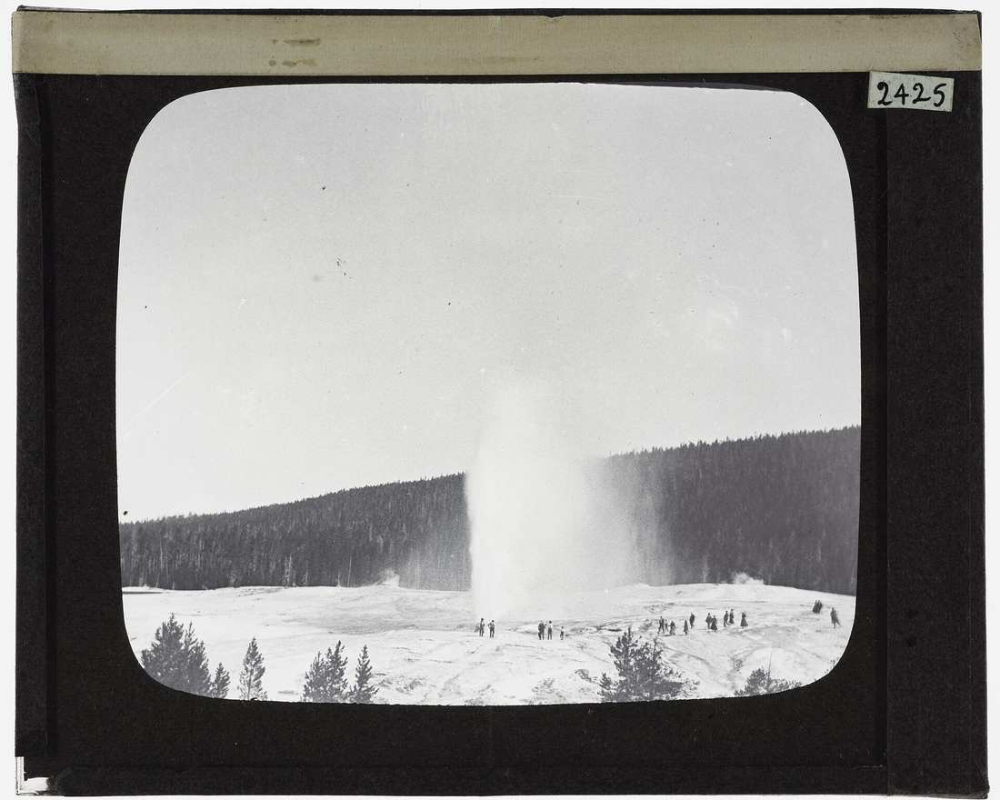
📚 Word WallWords scientists use
What to do: Tap or click each card to flip it and read what the word means.
Scene 2The Lesson
🎯 Part 1What Makes a Good Presentation?
Scientists don't just collect data. They share it. A presentation helps other people understand what you found. But not every presentation does that well.
Good presentations are built on criteria, the requirements a design must meet. Think of criteria like a recipe. Leave out an ingredient, and the dish doesn't come out right. Leave out a criterion, and your audience doesn't get the full picture of the ecosystem.
🎞️ Put the scenes in orderHow does park science reach visitors?
What to do: Drag each photo into the film strip, from first to last. You can also tap a photo, then tap a frame. Get the order right and your strip becomes a movie.
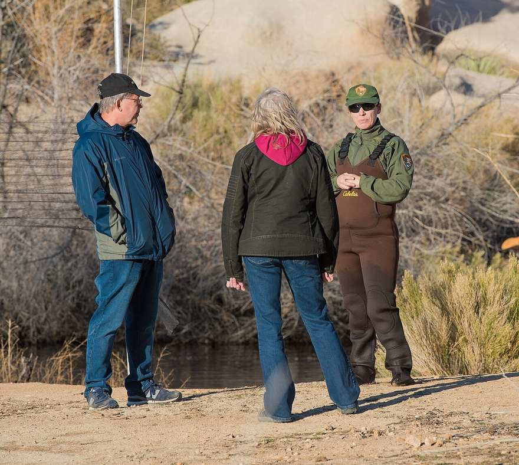
Ava says, "Pictures are just decoration on a presentation." What do you think?
🔍 Part 2Evidence Is the Foundation
Knowing something and proving it are different. Evidence is specific: a fact, an observation, or a number that backs up your claim.
"Wolves live in Yellowstone" is a claim. "Gray wolves travel in packs, which lets them hunt elk much larger than one wolf could catch alone" is evidence. One is a sentence. The other teaches you something real about the ecosystem. Your presentation also has constraints, like time and space. A visitor at a park sign may stop for only a minute or two.
🧪 The Visitor TestWhich one works for a visitor with two minutes?
What to do: Follow the steps one at a time. You will pick, test, and then explain.
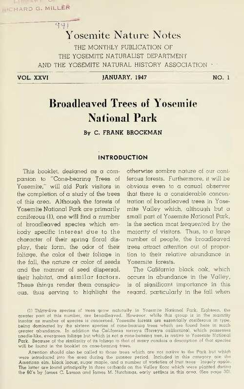
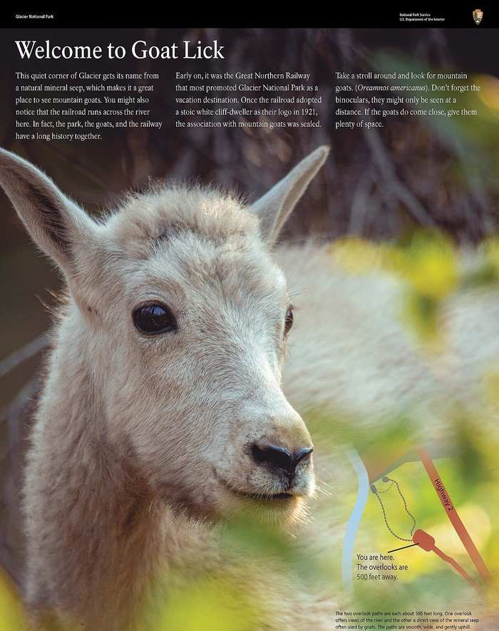
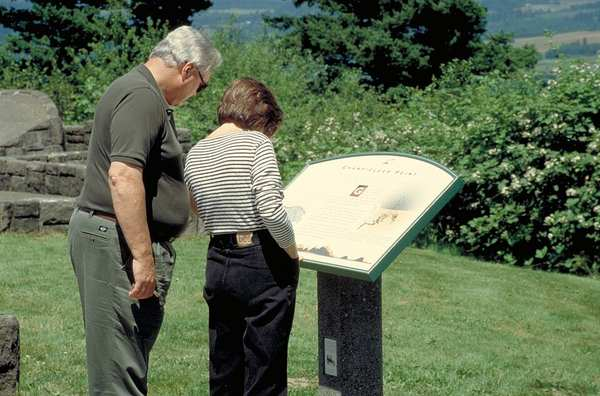
A visitor with 2 minutes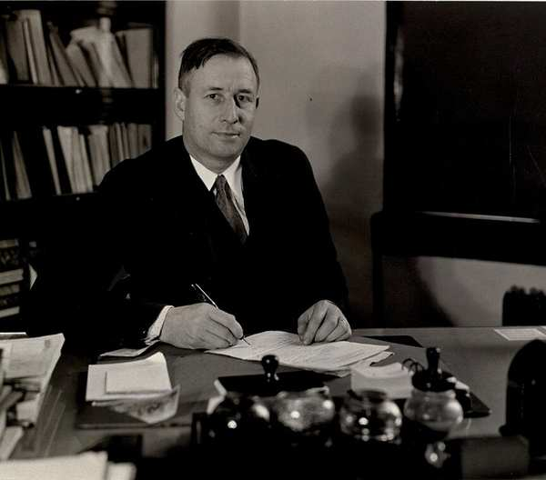
A reader with lots of time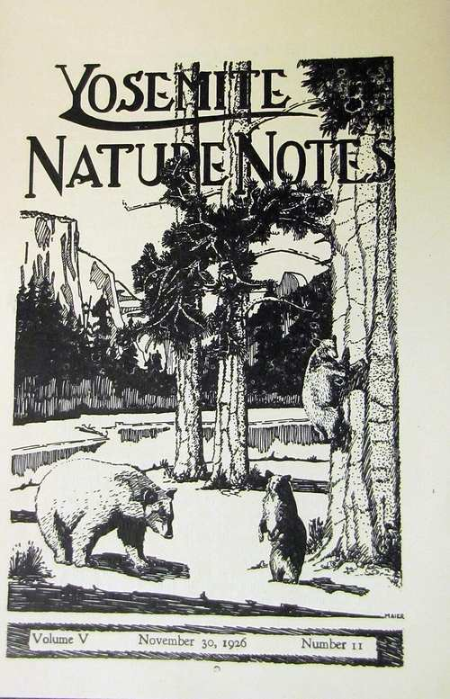
📋 Part 3Six Things Your Presentation Must Show
Your ecosystem presentation has six criteria: the park's name and location, its environmental conditions, three or more organisms and how they survive, a food web, one ecosystem challenge, and one conservation effort. A presentation that shows all six tells the full story of an ecosystem.
Scientists who study national parks write many reports every year. They spend a lot of time sharing what they find, because sharing science clearly is part of the job.
🔦 The Criteria HuntFour exhibits, four different criteria
What to do: First, make a prediction. Then brush the glowing exhibit: drag across it (or tap it again and again) until the photo shows.
Do you predict one kind of evidence is enough for a whole presentation?
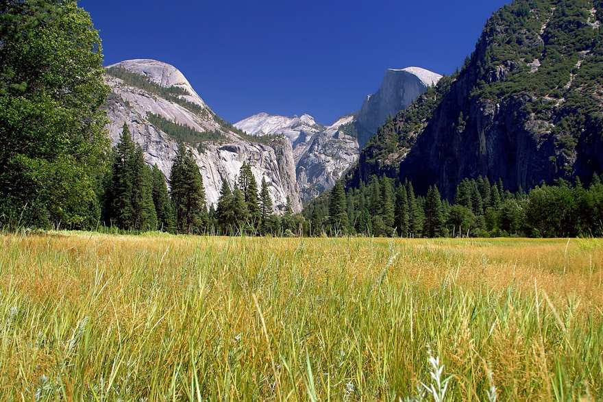
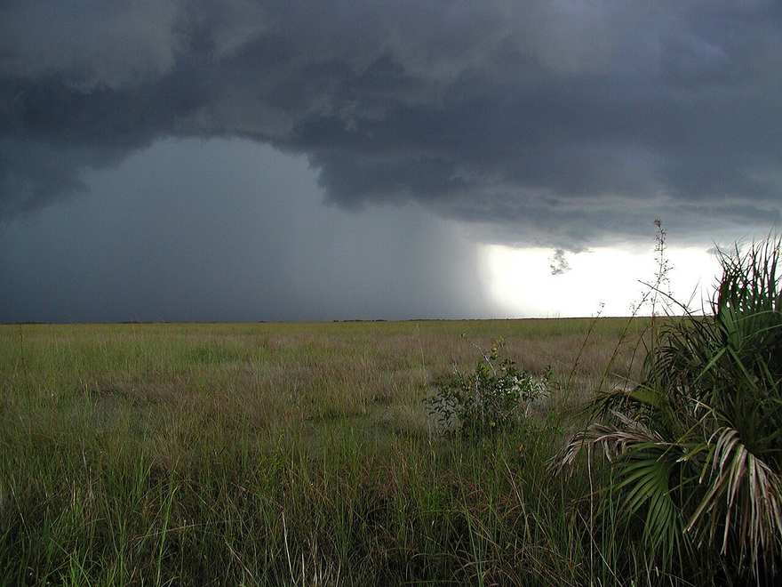
Exhibit 1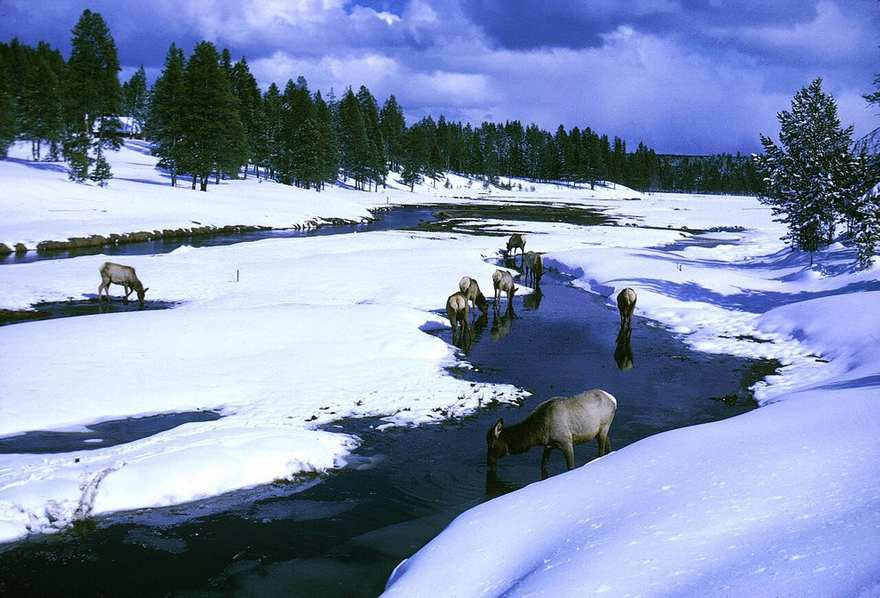
Exhibit 2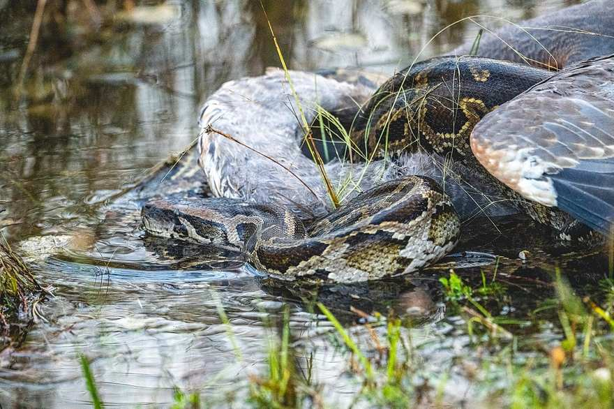
Exhibit 3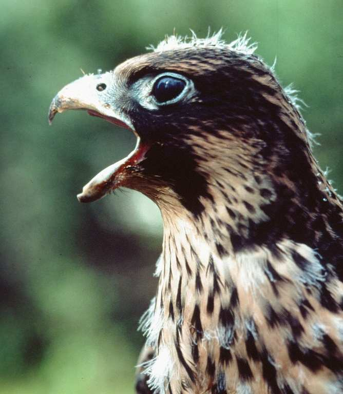
Exhibit 4A full presentation needs different kinds of evidence. Conditions, a food web, a challenge, and a conservation effort each show a different part of the ecosystem's story.
Leo says, "Any fact about the park counts as evidence for my presentation." What do you think?
A Museum on the Trail
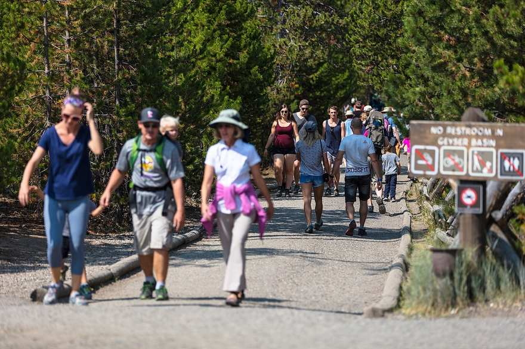
In 1929 and 1930, Yellowstone built small "trailside museums" right beside its trails, so visitors could learn about the geysers in just a few minutes.
The Norris museum is still open today, almost 100 years later, and rangers still share science there.
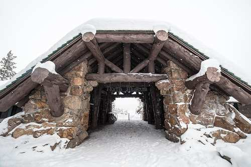
🕵️ Part 4Evidence Cards
What to do: Pick 3 cards, one at a time. Tap what you see, then name the criterion it fits. Decide if the slide's sentence is strong evidence, and see the answer.
| Card | What I see | Criterion | Its sentence | My evidence |
|---|
🗂️ Strong or vague?Sort the slide sentences OPTIONALOpen ▾
What to do: Pick one you solved. Pick the group it belongs in, then tap the other ones that belong in the same group.
Pick one from your chart and explain it.
Start with: "Card __ shows…"
Scene 3Self-Check
What is a design criterion?
Maria has 30 minutes to build and can only use paper and markers. What do scientists call those limits?
Which of these is the strongest piece of scientific evidence for an ecosystem presentation?
Scene 4Assignment
🔍 Part APlan your presentation
What to do: Answer each one in a sentence. Your answers help you start your slides in Part C.
1. Which park will you present? Where is it?
2. What is your strongest piece of evidence? Write the whole fact in one sentence.
3. Name one constraint on your presentation. How will it change what you include?
🚀 Part BShort answer
What to do: Answer in complete sentences.
1. What is the difference between a criterion and a constraint? Give one example of each from your own presentation.
2. How does including a conservation effort make your presentation stronger? Why does that information matter to the audience?
🎤 Part CBuild your slides in the Park Slide Studio
What to do: Pick your park. Build 6 slides, one for each criterion. Practice with the 2-minute timer. Then make your video (or download your slides) and upload the file to Canvas.
▶ Watch firstHow to build your slides2-minute videoOpen ▾
Loading the studio…
🎬 Your question from Scene 1Can you answer it now?
What do you still wonder about? Write your question here. Then answer it.
📋 My answersEverything you wrote, in one place
(Your answers show up here as you write.)
How to turn in: In Part C, press Make my video (or Download my slides) and upload that file to Canvas. Then copy your answers here and paste them into the Canvas assignment too. (The slides file already has your Part A and Part B answers on its last slide.)
✅ Checklist
What to do: Tap each item when it is done. Items you finish on the page check themselves.
- My evidence chart has 3 cards and my explanation.
- Part A: my plan, all three answered.
- Part B: questions 1 and 2.
- Part C: all 6 slides meet the criteria, and I made my video or downloaded my slides.
🎬 Premiere my presentationYour exhibit
What to do: Check your exhibit. Pick the one you wrote about, add your first name, then press Premiere film.
I observed…
It fits…
My evidence…
It tells us…
🎞️ This film's frames
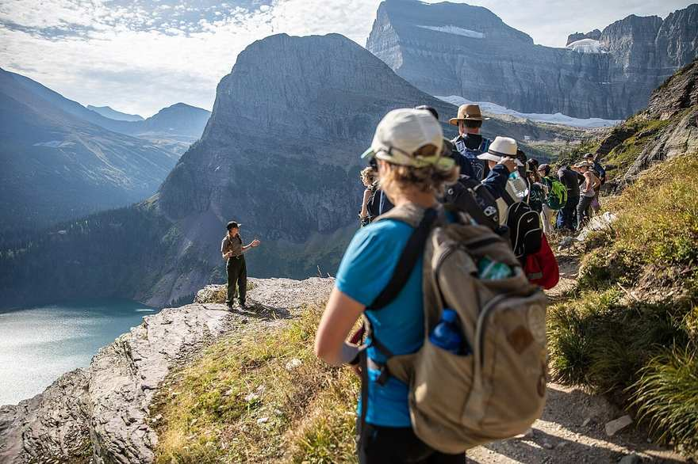
Field to Slide
The Visitor Test
The Criteria Hunt
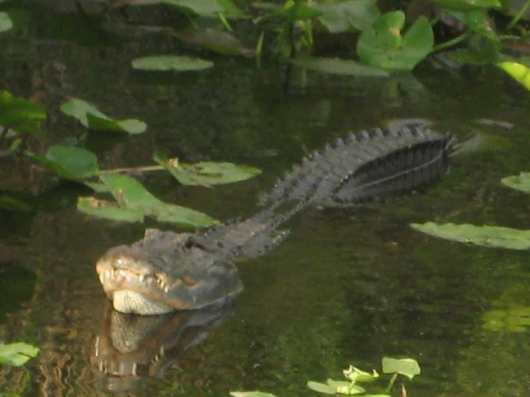
Evidence cards
Earn all four frames in the Lesson, then finish the checklist.
🔜 Coming up nextComing up next: 33.01
How Is Everything Connected? Next time, you'll connect the big ideas from the whole year of science.
Photo and music credits
- YOSE 109205- Yosemite Nature Notes Collection (9de482a8-1dd8-b71b-0b5e-2a1355…, NPS Photo, Public domain
- Gator on Anhinga Trail (5632544106), Everglades NPS from Homestead, Florida, United States, Public domain
- Aerial view of alligator hole (3efd265b-1dd8-b71c-07d2-adff37ffd152), NPS, Public domain
- MtLyell, Ben HartshorneCropping: Hike395 (talk · contribs), Public domain
- Yosemite National Park YOSE8123, National Park Service Digital Image Archives, Public domain
- Bison and pronghorn in Lamar Valley (27426095772), Diane Renkin for Yellowstone National Park from Yellowstone , Public domain
- Radio collared gray wolf on snow, Campbell William, U.S. Fish and Wildlife Service, Public domain
- Python (53580334082), evergladesnps, Public domain
- MAM raccoon 1590, NPSPhoto, Zobel, Jan 73 (9257895006), Everglades NPS from Homestead, Florida, United States, Public domain
- Sequoia and Kings Canyon 2002 Season Prescribed Burns (6db83b42-17ec-48b2-9fd…, NPS staff, Public domain
- Yosemite National Park (CA, USA), Mariposa Grove of Giant Sequoias, Grizzly G…, Dietmar Rabich, CC BY-SA 4.0
- River of Grass (1), NPSPhoto, Brian Call (9101714682), Everglades NPS from Homestead, Florida, United States, Public domain
- Newborn python, NPSPhoto (9247357403), Everglades NPS from Homestead, Florida, United States, Public domain
- El Capitan, Yosemite NP, Fenners uploaded 2005-02-28, Public domain
- Black-chinned red salamander--Shannon Welch (42329451184), Great Smoky Mountains National Park from Gatlinburg, TN, Public domain
- Upper and lower Yosemite falls. NPS-Damon Joyce (18657762676), NPS Natural Resources, Public domain
- Exhibit at Guy Bradley Visitor Center (53413137480), evergladesnps, Public domain
- Cuyahoga Valley National Park (bc2a93e2-9853-4581-b846-b045ee81a7a5), Victoria Stauffenberg, Public domain
- Yellowstone National Park, Ranger Naturalist Service LCCN2007676133, Work Projects Administration Poster Collection, Public domain
- Ranger Talking to Visitors At Logan Pass (50513910866), GlacierNPS, Public domain
- Hpc-000103.jpg (a52c53bb666b4a4ab91d7abb7c20cc33), Unknown authorUnknown author, Public domain
- Norris Geyser Basin Museum (24495006937), Yellowstone National Park, Public domain
- Summer T-storm, NPSPhoto (9257940598), Everglades NPS from Homestead, Florida, United States, Public domain
- Elk (Wapiti) in Gibbon River during winter at Yellowstone National Park (d384…, NPS Photo, Public domain
- Python (53581419798), evergladesnps, Public domain
- Peregrine Falcon - DPLA - c53ea6f41813553c37140b6276da253f, Department of the Interior. U.S. Fish and Wildlife Service. , Public domain
- H C Bryant, United States. National Park Service, Public domain
- Historic Columbia River Highway - Reading About Crown Point - NARA - 7719253, Unknown authorUnknown author or not provided, Public domain
- Matt Metz, wolf project biologist, changes the batteries on an autonomous rec…, YellowstoneNPS, Public domain
- Biologists measuring fish during a population survey, U.S. Fish and Wildlife Service, Public domain
- Chesapeake Waterbird Food Web, Matthew C. Perry, Public domain
- Ranger Talking to Visitors (48920675641), GlacierNPS, Public domain
- Beaver, Yellowstone River (32977426504), Yellowstone National Park, Public domain
- Yellowstone Cutthroat Trout, U.S. Forest Service, Public domain
- Fire above Snake River, unknown, Public domain
- Bison in deep snow (11951121835), Yellowstone National Park from Yellowstone NP, USA, Public domain
- Tamiami Bridge Construction (5), NPSPhoto, 2011 (9250164284), evergladesnps, Public domain
- Whitetail Deer in Sawgrass, NPSphotos (9257896520), Everglades NPS from Homestead, Florida, United States, Public domain
- Puma concolor coryi Florida panther, U.S. Army Corps of Engineers, Public domain
- Periphyton in January, NPSPhoto (9247302909), Everglades NPS from Homestead, Florida, United States, Public domain
- Sawgrass Prairie NPS Photo G Gardner (42295786392), evergladesnps, Public domain
- A Burmese python coiled in the grass in the Everglades, Bryan Falk, USGS. Public domain., Public domain
- Roseate Spoonbill, NPSPhoto (9101514610), Everglades NPS from Homestead, Florida, United States, Public domain
- Everglades Stormwater Treatment Areas, September 20, 2014 (15836177632), USEPA Environmental-Protection-Agency, Public domain
- Wading Birds Feeding at Shark Valley Slough (49860843262), evergladesnps, Public domain
- The first wolf arrives in Yellowstone at the Crystal Bench Pen (Mike Phillips…, Yellowstone National Park, Public domain
- Grizzly Bear Yellowstone, Terry Tollefsbol, NATIONAL CONSERVATION TRAINING CENTER-PUBL, Public domain
- Half dome at sunset in Yosemite National Park. NPS-Damon Joyce (18657742316), NPS Natural Resources, Public domain
- Lower Falls in Grand Canyon of the Yellowstone during winter (53516852641), Yellowstone National Park, Public domain
- Lake trout spawning Shoshone Lake Yellowstone National Park 3 October 2012, Jay Fleming/NPS, Public domain
- Yosemite Meadow fire, 9-7-2014, Yosemite National Park employee, Public domain
- Quercus kelloggii (tree), Splarka at English Wikipedia, Public domain
- Grand prismatic spring, Jim Peaco, National Park Service, Public domain
- Mount Lyell Salamander 02, U.S. Geological Survey/photo by: Chris Brown, Public domain
- Yosemite toad pair RobGrassoNPS (16750578568), Pacific Southwest Region USFWS from Sacramento, US, Public domain
- Black Bear, Yosemite National Park, Mckunec, CC0
- Yosemite meadows 2004-09-04, Jon Sullivan, Public domain
- Ranger talking to visitors (40464957023), Joshua Tree National Park, Public domain
- Beehive Geyser, Yellowstone YORYM TA2425-1, Tempest Anderson, Public domain
- Yosemite nature notes (IA yosemitenatureno261unitrich), Yosemite Naturalist Department (C. Frank Brockman), 1947, Public domain
- Goat Lick Wayside Exhibit (55459123617), GlacierNPS, Public domain
- Trail to Norris Geyser Basin Museum (36919468142), Yellowstone National Park, Public domain
- Music: String Quartet No. 12 "American," II. Lento (Antonín Dvořák), Musopen String Quartet, public domain recording (via Wikimedia Commons).
- Park Slide Studio: every photo in the photo bank is public domain. Field Notes facts come from National Park Service park pages (nps.gov). The "Download my slides" file is made with PptxGenJS (MIT license).
- Opti the owl: Optima Academy. Sound effects are made by the page. The science-sharing movie, the Visitor Test, and the Criteria Hunt are models; every place photo is real. The planned-fire photo is from Sequoia and Kings Canyon National Parks.